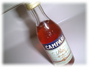

| ..*..*.. 2002年8月10日(土) 晴れ ..*..*..  会社でお昼ご飯を食べたあと、左のものを持って洗面所に行きます。これ、なにかって言うと、お手製の「マウスウォッシュ」なんです。 毎回、ほんの少しコップに入れて水にうすめてつかうのと、自分で作っているから防腐剤が入っていないので一度にたくさん作れないので、小さい入れ物を探したら、この、「カンパリ」（お酒）のビンが見つかったわけです。ちょうどいい大きさなので重宝しています。 お昼を食べた後、これを洗面所に持っていって口をゆすぐのが習慣となりましたが、いつもこれを持っている私を見て、すれ違う人はちょっとぎょっとするみたいです。 確かに、いつもこのカンパリのビンを持ってトイレに入っていったら、アル中で隠れて飲むんだと思われてるのかもしれないですよね(^^;。見られた人には、マウスウォッシュだ、と説明していますが(^^; この前は、冗談で「私は誰にも言わないから安心して」と言われてしまいました(^^;。誤解を受けても、ほんとにこれはちょうどいい大きさなんです。「カンパリ」のラベルはしっかりついていて、洗ってもとれないので、このまま使い続けようと思っています。 さて、作り方もここに書いておきますね。みちさんに教えていただきました(^^) シナモン 小さじ２分の１ はちみつ 小さじ２分の１ ウオッカ ２分の１カップ（１００ｃｃ） 精製水（水を沸騰させたもの） １カップ（２００ｃｃ） ♪ すべての材料を合わせて、はちみつが溶け、スパイス類の粉がよくなじむまでかき混ぜ、コーヒーフィルター（キッチンペーパー）でこし、密封できるキャップのついたボトルに移しかえて冷蔵庫で保存する。 ♪ 大さじ１〜２杯をコップ１杯の水で薄めてうがいをすると予防になるそうです。クローブ、シナモン、ウオッカは抗菌作用があるそう。 ♪ コーヒーフィルタやキッチンペーパーでこすのに時間がかかるので、私は、柄のついたざるにキッチンペーパーを敷いて中身を全部入れて、一晩おいてます。 |